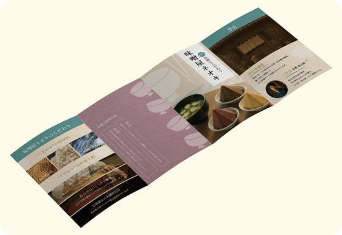
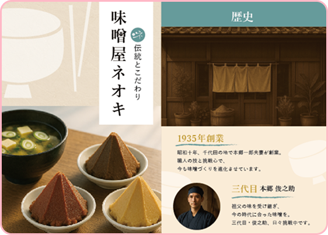
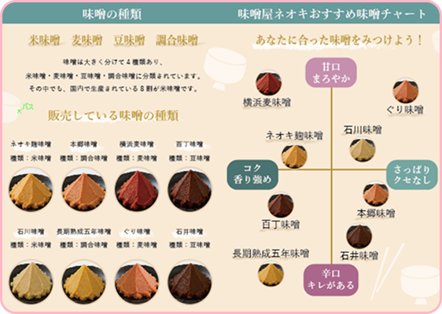
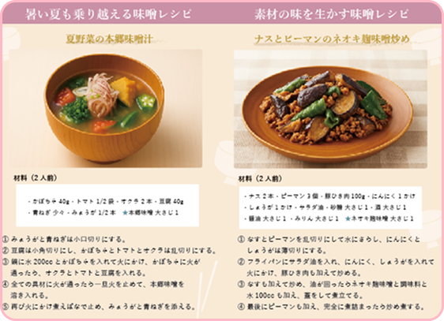
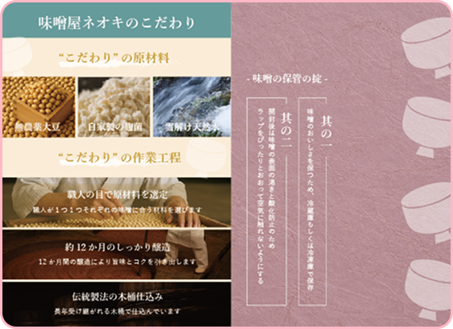

Leaflet
Miso shop

制作内容について
ページ数：8p
制作時間：40h
制作時期：2025.7
ターゲット・ペルソナ
55歳 - 60歳（女性）
子育て終了 / 夫婦二人暮らし / 料理趣味
上質1年目 / 素材にこだわりはじめた
調味料から上質なものを求める
デザインコンセプト
「健康的で家庭的な食事を大切にしたい中高年層の女性」に向けて、
自然な色合いや伝統的な模様、料理写真を取り入れ、
味噌の魅力と日常での使いやすさをデザインに落とし込みました。
親しみやすさと上質さを両立させ、ユーザーに安心感を与えられる表現をしました。



